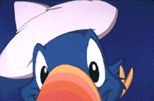
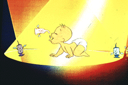
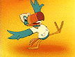
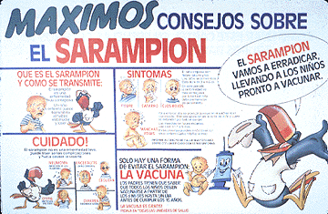

Following the UNICEF Animation Workshop in Prague in 1990, a number of animation studios started looking at ways in which they could work with UNICEF. Walt Disney Feature Animation decided to embark on a project with the UNICEF office in Ecuador. Disney had two goals in Ecuador: 1) train people locally to create their own films, and 2) develop a new character that could become a spokesperson for important health messages. In 1991, representatives from Walt Disney Feature Animation traveled to Ecuador, where they began working with Cinearte, a local animation company UNICEF had been working with for several years.
The group first chose the health issue they wanted to tackle in this initial film. After much debate and discussion, the topic of immunization was selected. Over the next several days, Disney Feature Animation executives led the group in the process of project designing and shaping. By the end of a week's work, a character had been created to convey these UNICEF messages - Maximo.
Together, UNICEF, Disney and Cinearte decided that the Maximo character would be a toucan. He was developed through a long research process that looked at different animals and characters peculiar to South America. They wanted Maximo to be a friend to children, and a character that people all over the region would recognize and identify with. By doing so, Maximo would be the kind of character that was free to pass on any health message that needed to be told.
Maximo was first introduced to the Latin and South American region in August 1994 through a national campaign to eradicate measles. The 3-minute immunization film takes the viewer into a small rural village somewhere in Latin America, where new parents consider immunizing their baby. Maximo takes the viewer into the village and shows the different diseases that could affect their child if they weren't to protect him through vaccination. The story is simple, short and entertaining, and the main points of the message are reiterated by Maximo before he says goodbye.
With the help of the Maximo film, the immunization campaign was regarded as successful by health professionals, the mass media and local children and families. In fact, young children wanted to get their shots just so they could get their immunization card with Maximo's picture.
Research showed that Maximo was viewed as credible, was well-accepted by both children and adults, and was seen as having an international identity rather than solely an Ecuadorian image.
A second Maximo animated spot was created shortly after the first film, this one dealing with the issue of Iodine Deficiency Disorder (IDD). This spot explains to mothers that they need a good amount of iodine in their diet to ensure a healthy pregnancy. A number of additional Maximo features have recently been completed in Ecuador dealing with issues like literacy, water and sanitation, measles, oral rehydration therapy, and Vitamin A deficiency.

[upper level | home]